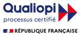
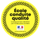
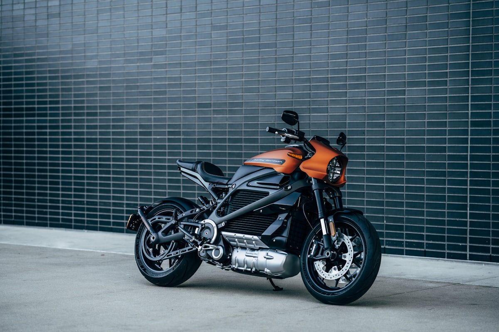

Le permis, oui.
Mais lequel, pour vous ?
Quatorze formations, deux agences à Roanne et à Charlieu, et une équipe qui forme des conducteurs depuis 1977. Répondez à trois questions : on vous dit laquelle vous concerne, ce qu'elle contient, et quelles aides vous pouvez demander.
Par où commencer ?
Deux réponses suffisent pour démarrer.
Quelle formation vous concerne ?
Le permis n'est pas un produit unique : entre l'AAC à 15 ans, la boîte automatique, le A2, la passerelle ou la formation remorque, ce n'est ni le même âge, ni le même volume d'heures, ni les mêmes aides. Répondez aux questions, l'outil sort la formation exacte et ce à quoi vous avez droit.
Votre formation en 3 questions
Question 1 sur 3Les quatorze formations dispensées à l'auto-école
Du permis AM à 14 ans jusqu'au stage de récupération de points, toutes les formations sont assurées dans les deux agences ou sur la piste moto de l'école de conduite.
Le permis se finance : encore faut-il savoir comment
L'auto-école est agréée pour le permis à 1 €/jour et déclarée comme organisme de formation (n° 84420307642) depuis février 2018, ce qui ouvre le financement par le CPF.
Permis à 1 €/jour
L'auto-école est agréée pour ce dispositif. Il est accessible à toute personne âgée de 15 à 25 ans, pour l'inscription à son premier permis de conduire. Il permet d'échelonner les paiements pour alléger les règlements.
Compte personnel de formation (CPF)
Les élèves peuvent utiliser leur compte CPF pour financer une partie ou la totalité de leur permis. L'auto-école est certifiée Qualiopi en tant qu'organisme formateur.
France Travail et Mission Locale
L'auto-école collabore avec ces organismes, qui participent au financement du permis de conduire pour les personnes qu'ils accompagnent.
Employeurs et comités d'entreprise
Les organismes de formation des entreprises sont également partenaires, ainsi qu'une série de comités d'entreprise et d'associations du Roannais.
Partenaires de l'auto-école
Une auto-école du Roannais depuis 1977
L'Auto École Boussand a été créée par Monsieur et Madame Boussand en 1977. D'où le nom. L'établissement a prospéré et a perduré grâce à eux et à leur gendre Monsieur Serge Médina.
Depuis mars 2014, Mickaël Desmules en est le gérant. En collaboration avec plusieurs moniteurs et monitrices diplômés ayant une autorisation d'enseigner en cours de validité, l'équipe transmet son savoir et la bonne attitude à prendre au volant pour atteindre l'objectif fixé à chaque élève : le permis de conduire.
- 1977Création de l'auto-école par Monsieur et Madame Boussand.
- 2014Reprise par Mickaël Desmules. L'auto-école se diversifie : permis BE et leçons sur boîte automatique.
- 2015La formation B96 et le permis BE (remorque) sont dispensés au sein de l'auto-école.
- 2018Enregistrement comme organisme de formation, déclaration d'activité n° 84420307642.
- 2019Ouverture du permis moto A1 et A2, de la passerelle A2 vers A et de la formation AM.


Certifications et labels affichés par l'auto-école sur son site actuel.
Photo d'illustrationLes autres prestations de l'école
- Perfectionnement à la conduite — pour avoir moins d'appréhension.
- Stage sur Minotaure — sur des pistes glissantes, pour sensibiliser à la perte d'adhérence.
- Rendez-vous post-permis — le 3e samedi de chaque mois, sur demande des élèves.
Emplacement réservé aux photos de l'auto-école (agences, véhicules, piste moto, équipe) : à fournir par le client, aucune photo de ce type n'existe aujourd'hui sur le site.
Roanne et Charlieu
Deux bureaux, deux jeux d'horaires — et à Roanne, des horaires de bureau distincts des horaires de cours de code. L'indicateur ci-dessous se met à jour tout seul selon l'heure qu'il est chez vous.
-
5 avenue de Paris
42300 Roanne - 04 77 72 25 34
- aeboussand14@yahoo.fr
Ouvrir l'itinéraire vers l'agence de Roanne
Horaires du bureau
Horaires des cours de code
Le samedi : cours de code par thèmes uniquement.
-
17 boulevard Thiers
42190 Charlieu - 04 77 60 07 38
- aecontact14@yahoo.com
Ouvrir l'itinéraire vers l'agence de Charlieu
Horaires
Le code se travaille thème par thème
Les jours et horaires de cours de code par thème sont variables en fonction de la demande. Voici la répartition affichée par l'auto-école.
Mardi
- LDispositifs légaux en matière de circulation routière
- CLe conducteur
- RLa route
- ULes autres usagers
Jeudi
- DRègles générales et diverses
- APorter secours
- PPrécautions nécessaires en quittant le véhicule
- MÉléments mécaniques et autres éléments liés à la sécurité
Vendredi
- SÉquipement et sécurité des véhicules
- EUtilisation du véhicule et respect de l'environnement
Samedi
- ★Cours de code par thèmes uniquement.
- ★Le 3e samedi de chaque mois : rendez-vous post-permis, sur demande des élèves.
Une question, une inscription ?
Si vous avez utilisé l'outil plus haut, votre demande est déjà résumée dans le message : l'agence sait de quelle formation vous parlez avant même de vous rappeler.
Agence de Roanne
- Adresse
5 avenue de Paris, 42300 Roanne - Téléphone
04 77 72 25 34 - E-mail
aeboussand14@yahoo.fr
Agence de Charlieu
- Adresse
17 boulevard Thiers, 42190 Charlieu - Téléphone
04 77 60 07 38 - E-mail
aecontact14@yahoo.com
Stages de récupération de points : une date est prévue chaque mois pour un stage sur deux jours. Se renseigner au bureau.